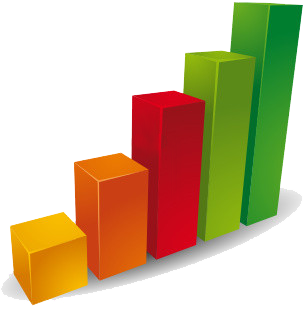

Site de Publication
Notre Entreprise

Indicateurs économiques officiels
Obtenez rapidement les données les plus récentes sur les indicateurs économiques clés et évaluez l'état actuel de l'économie canadienne.
Données économiques et financières (mise à jour quotidienne)
Obtenez les statistiques clés de dernière heure sur l'économie et les finances, réunies par Statistique Canada dans un tableau récapitulatif.
Dernières statistiques économiques (mensuelles)
Obtenez les dernières statistiques mensuelles de Statistique Canada concernant la production, la demande intérieure, la main-d'œuvre, le commerce international, la fabrication et les prix.
Indicateurs des pressions s'exerçant sur la capacité de production et l'inflation au Canada
Consultez les indicateurs économiques utilisés par la Banque du Canada pour guider la politique monétaire et surveiller son efficacité.
Rapports et analyses ?
Obtenez des rapports publiés qui offrent des données et des analyses plus détaillées sur des aspects précis de l'économie canadienne.
Ministère des Finances Canada - Publications et rapports
Obtenez de l'information sur les dépenses et les revenus du gouvernement, ainsi qu'une analyse des facteurs ayant une incidence sur ces résultats.
FCEI - Baromètre des affaires
Consultez les résultats les plus récents du sondage du Baromètre des affaires, mené par la Fédération canadienne de l'entreprise indépendante.
Statistiques sur les petites entreprises ?
Consultez des statistiques et des rapports qui portent sur les activités des petites et moyennes entreprises.
Rendement des entreprises et appartenance - Petites et moyennes entreprises
Obtenez des statistiques et des analyses sur les caractéristiques et les activités de financement des petites et moyennes entreprises.
Recherche et politique de la petite entreprise
Obtenez des rapports de recherche et des statistiques sur les petites entreprises et l'entrepreneuriat au Canada, ainsi que le bulletin trimestriel qui offre un aperçu du rendement des petites entreprises.
Rendement des entreprises et appartenance ?
Évaluez le rendement de votre entreprise, et obtenez des statistiques et des analyses portant sur la façon dont les entreprises réagissent à l'imposition,
à la réglementation, aux cycles économiques, à la concurrence, et plus.
Outil d'analyse comparative pour PME
Voyez comment votre entreprise se situe par rapport à des petites entreprises de votre industrie.
Répertoire des statistiques sur le rendement des entreprises et l'appartenance
Obtenez des renseignements statistiques et analytiques sur divers sujets relatifs au rendement des entreprises, et des données démographiques sur les entreprises.
Prix ?
Obtenez des statistiques sur la fluctuation des prix de biens de consommation, de produits industriels, ainsi que d'autres produits liés aux industries de la construction,
de l'agriculture, de la machinerie et de l'équipement, de l'éducation, de services et de l'importation/exportation.
Répertoire des prix et indices des prix
Obtenez de l'information sur la fluctuation des prix pour divers produits et services.
Répertoire des statistiques sur l’indice des prix à la consommation
Obtenez des mesures de la variation des prix des biens et services achetés par les consommateurs, comme l'indice des prix à la consommation et l'indice des prix des logements neufs.
Répertoire des indices des prix des produits industriels
Obtenez des mesures de la variation des prix de l'investissement en machines et matériel, par exemple l'indice des prix des machines et du matériel,
ainsi que l'indice du prix de vente de l'énergie électrique.
Bas